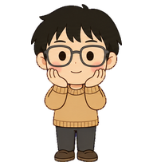

THE LITTLE WORLD OF L
今天，也和 L 一起。
黑色刘海，圆圆眼镜。
还有那件熟悉的驼色毛衣。
L 的日常片段

IDLE
发会儿呆
不着急，陪你慢慢来。
动画暂时未加载，请刷新页面重试。
MEET YOUR COMPANION小小的 L，
小小的 L，
熟悉的陪伴。
不是每一刻都要很忙。L 可以安静地托腮，也可以认真打字；有时跳一下，有时替你竖起大拇指。
黑色短发深灰圆眼镜粉色腮红驼色毛衣